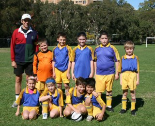

| Match Report - 03 May 2008 |
|
|
|
|
|
|
|
|
|
|
The Under 6A's Green Machine played Holy Cross at Holy Cross. Due to Holy
Cross having only three players, Elliot Cunningham played for the other team
so as not to forfeit the game. It was a very close game. Chris was alive
taking the ball down the side line and scoring our three goals. Gus was a
great defender, doing a back pass and getting the ball away from our goal.
Cooper and Zac were distributing the ball well. It was in the last 30 seconds
of the game that Holy cross scored the winner. Player of the match was
Zac.
- Ian Cunningham (Manager)
|
|
|
| U7 Green |
North Ryde Koalas - All Saints Hunters Hill B

|
|
|
|
You could tell just by the kind of day we had woken up to that it was going
to be a special day. Our U7 Green Koalas were just simply awesome and
inspiring! Not only did they have to contend with only having four players
show up (1 short) and their opposition having a few reserves, so fresh legs,
but they also had a new coach for the day at the last minute (the author).
So it seemed that anything that could go wrong did go wrong.
The only instruction given to the team by their coach before kick-off was
to just have fun. After only a few minutes, we had gone a couple of goals
behind and under normal circumstances you would expect to see some long
faces and perhaps a drop in enthusiasm... not for this great bunch of kids!
Led by Jarvis who was his usual workhorse self all over the park (makes me
tired just watching him), the Koalas started to work their way back into
the game against a lot fresher opponents. Before you knew it the Koalas
had drawn level, with Daniel scoring his first ever goal (lucky his father
wasn't refereeing at the time or he might have made a goose of himself by
jumping 10ft in the air). James was brilliant as well keeping his opponents
at bay with solid defence and also starting up a number of attacking raids
of his own. Our Player of The Match, Lioda, was sensational. Lioda was
involved in everything and it didn't matter how physical it got, she didn't
back off one bit.
I wasn't concerned (and never am) with how many times the ball goes into the
back of the net. The determination shown by Jarvis, Daniel, Lioda and James,
whilst being pretty tired and never giving up, made them all winners. The
Fab Four should be proud of themselves.
Special mentions to Will who helped out for around the last 10 minutes after
playing his own U6 game earlier, to the coach and manager from Hunters Hill,
who have their team playing in a wonderful spirit and especially to the
parents and supporters from both teams who were very fair in their
encouragement of both teams.
Thank you to all concerned.
- Paul Bonaventura
|
|
|
| U8 Blue |
North Ryde 2 - WPH-Cherrybrook 3

|
|
|
|
It was another brilliant morning for just about anything and the Under 8
Blues once again hurled themselves onto the field with the only kind of
non-stop enthusiasm they understand. The whistle blew and a sudden mass of
young bodies jostled for possession of the ball with the usual shark-feeding
frenzy that is common in the initial minutes of any match. It was soon evident
that both teams were evenly matched and the spectators were going to be treated
to a good game of football.
Both North Ryde and West Pennant Hills were commendable in the way they moved
the ball up the field with plenty of dynamic kicks and quality passes, matched
only by the excellent and solid defensive tackles that were applied in equal
measure as they sought to defend their respective goal areas.
Shannon was a work-horse during his first-half spell
in goals, diving at the feet of his would-be attacker to relieve him of the
ball and keep the scoreline in check.
The break came about five minutes into the first half when WPH somehow got
the ball past a mass of players crowding the Blue's goal to open their account
at 1-nil. But the Blues struck back hard with some excellent passing play and
scored two superb goals before the break, one a long-range and well-directed
kick from Adam's reliable boot, and the second from
David who took advantage of a rebounding ball and
slammed it into the top corner of the WPH net.
These two goals were the final product of several well-orchestrated moves that
involved the entire team. Tom H again showed us
how to stay cool in the face of adversity and WPH were always going to
struggle to move the ball past him. Christopher and
Tom O seemed to occupy similar positions in the
mid-field and kept the opposition in check with some decisive tackles and
good forward passes. Charlie,
Eli and Jack once again
displayed their useful foot skills to open up some gaps in the play and create
the scoring opportunities that followed. A terrific effort all round, and the
Blues walked off at half time 2-1 up against their WPH rivals.
The second half was a different story though. Shannon was obliged to leave
at the break and the team was one player short for the remainder of the game.
Undaunted, the Blues set about their task with the same gusto that they did
in the first half, but fatigue eventually took it's toll and the Blues were
doing it tough in the last 10 minutes of the game. WPH, by contrast, had 14
pairs of legs to choose from and applied substitutions at regular intervals
during the second half which, combined with a few curiously big players,
finally gave them the edge to score a further two unanswered goals and win
the match 3-2.
The Blues however can be proud of the good account they gave of themselves
on the field and the manner in which they put everything they could into the
game. As ref I was particularly impressed with their mature attitude during
the game, not dishing out unwanted reprimands when a fellow team mate spilt
the ball and unfazed when a goal was scored against them. The same attitude
which allows them to have fun out there and bring them back next week for
some more
Well done Blues, and well done to Eli who claimed
Player of the Match for his consistent effort both in the goals and on the
field.
- Mark Howard
|
|
|
|
|
|

The skies were blue, but there was certainly a winter chill in the air.
We were keen to get back into it after a wet / holiday break.
For the first five minutes, the ball never left our half. Beecroft went on
raid after raid, but our back three of Ben,
Thomas and Kireth stood
firm. If it wasn't for them, the score would have been much more than the
3-0 half time score. Julian had some great
practice at taking some very long goal kicks - when he set them up, everyone
scattered!
After her heroic spell in goals, Maggie was as
busy as ever doing some lovely runs and always looking to pass the ball.
Timmy and Harrison
did a good job at getting the ball forward in the second half and second-half
goalie Thomas did a great job in lobbing
some long clearances. We almost scored a couple of goals in the second half
which would have made the score look a lot better - but as we only had nine
we ran out of puff towards the end.
Taylor continues to impress with her 'get in and
have a go' attitude and Brooke tried hard all day
and never gave up and her player of the match was well deserved!
Nevertheless all the players are learning fast.
They are all getting used to playing positions, trying very hard to pass the
ball and are listening well at training. Most of all they are enjoying their
Saturday mornings out.
- Andrew Curdie (Coach)
|
|
|
|
|
|
The boys looked good in their new strip. Going into the game, North Ryde
appeared to stand a reasonable chance of a win or at least deliver a tightly
contested match. Hills Hawks only had 10 players, but alas 2 minutes into the
game they scored their first goal. North Ryde made a couple of attempts at
goal, the first with a pass from Frazer to Tom and then to Aymon but they
were unable to convert. The second attempt was a pass from Tom to Emile and
then to Aymon. At half-time we were 2-nil down. In the second half, North Ryde
lost sight of trying to turn the score around and perhaps we can attribute the
final score of 8-nil to the lack of training and cancellation of soccer due to
the wet weather. Both the coach and president of the club critiqued the game,
and hopefully the team will take the comments on board and work hard in the
coming weeks to improve their performance. Player of the match went to Isaac.
- Lesley Campbell (Manager)
|
|
|
|
|
|
Some say he never smiles or shows compassion. Others report seeing him
knocking young children to the ground just so he can get to the soccer
ball first during friendly backyard games. But we at North Ryde Soccer
just know him as the AXE.
That's right, the AXE was in charge of our young, innocent girls. Would
he push the Wildcatz past their physiological
or psychological limits? Or would he control his all consuming passion to
win at all costs? Yes, the AXE had jumped at the opportunity to be the
fill-in coach. Tess, our master coach - the coach of all coaches - was off
playing her own soccer match. Tess doesn't brag about her sporting
achievements, but in her game the previous week she scored a hatrick! Not
bad for a coach! Let's hope all our girls can emulate Tess's achievements
as the season progresses.
With both Stefanie and little Emma unavailable (I hope they have Doctor's
certificates or Stat. Decs), we may have struggled if it wasn't for our new
recruit Sophie. Let me tell you she has one of the most wicked left foot
kicks I've seen for an under 12 girl, but more about that later. I'll have
a contract available prior to training next week.
Like all good coaches, the AXE had a plan. The only problem was Bhenita
arrived a little later than the other girls so she was quickly nominated
as 1st half goalie. So much for the plan!
There had been a bit of discussion between AXE and the coaching entourage
regarding the best approach for maintaining our position on the competition
ladder. Unfortunately nobody had passed that on to the girls. So with the
kick off being ours, it was a short pass from Jemma to Mia. Then Mia was
off like a bullet, down the field past 6 defenders to just miss the goal by
millimetres. This all happened in about 10 seconds! A quick mental calculation
and at this rate the final score could end up about 200-nil. AXE! AXE! We
only want to win by 1 - 2 goals max!
With attack after attack on Beecroft's goal something had to finally give.
Jemma positioned the ball for her 2nd or 3rd corner kick when the AXE called
out to Sophie "stay on the goalie!" Apparently it was some tactical play they
had developed during the summer training months. Hold on... Sophie had just
joined us. Anyway, Jemma's kick was right on target and Sophie gently pushed
the ball in.
Meanwhile, Bhenita in goals was starting to suffer from eye strain due to all
the play being 100 metres down the field. I don't think she even touched the
ball during the first half. This wasn't because Beecroft hadn't tried, but
just the task of getting the ball past our midfielders and backs was
impossible.
Half time with a quick rev up by the AXE and a change of goalies, we were
back into it. Gaelyn very kindly volunteered to help out as goalie and lucky
she did. It was as if Beecroft had been listening to the AXE's pep talk,
because they finally were able to get out of their own half twice using our
tactics; only to be stopped by Gaelyn's great keeping skills. With what
seemed like a continuous bombardment of Beecroft's goal mouth, the girls
showed both incredible individual and team skills. Rokayah was rewarded for
her efforts with 2 beautiful goals (Mohammad were you watching?). They were
by no means easy goals but again it just showed the depth of talent within
the team. In 3 games the Wildcatz have scored
10 goals by 5 different players and there are plenty more goals to be scored,
whether it is your first or your tenth before the season finishes.
This week's Captain, Stella, was controlling her team like a seasoned
campaigner. Stella started in the back line but as soon as she moved to the
midfield position, her desire to score goals was ignited and she showed a
new-found tempo, which her team mates copied.
Other outstanding efforts by the girls included Karagh's brilliant flashes
down the sidelines and after the 3rd occasion, the girl who had chased her
exhaustedly said, "I can't catch you" and was ready to concede if Karagh got
the ball again. Karagh's straight line speed and first touch has provided the
team with several scoring opportunities, if only she would listen to Dad. Yes,
I'm with Mohammad, they are just like their mothers!
Remember the wicked left-foot of Sophie? Well even though she is a natural
right-footer, Sophie has the ability to hammer the ball across the goal mouth
from the left side of the field. She did just that on several occasions, which
allowed our increasing number of forwards to take shots at the goal from right
in front. With Jemma doing the same from the right-hand side and Paula taking
corners, we should have plenty of opportunities for Amany, Mia and our
part-time forwards including Leeanna, Benhita, Gaelyn, Stella and Ellen to
score a couple of goals soon. I think we might see Paula's name on the
scoreboard before too long, she just keeps getting better and better. One
from outside the penalty box would be good!
Again we were enthralled by the skills displayed by our girls, whether it be
linking 4 or 5 passes together to cut through the opposition, the calling of
square, switch and line; using the width of the field to gain easy yards; or
more importantly, the desire to learn and share in the excitement of being
part of a team, the Wildcatz.
I should mention, as the second half progressed and the score went more our
way, we repositioned a lot of the girls, usually straight to the back line.
I think we ended up with 6 backs, in an attempt to slow the game down. It's
very unusual to have so must talent available in one team and be able to play
any of the girls anywhere on the field, without losing the structure.
I haven't been able to mention everybody this week simply because everybody
is playing so well and giving their best. It is difficult to single out that
extra special moment, when you all make the whole game something very special
for us. I just can't wait for our game next week and Tess to come back! Ok!
Ok! the AXE wasn't that bad!
Come on, Wildcatz get the beat! Let us hear you
stomp your feet!
Come on, Wildcatz get the groove! Let us see
you jump and move!
Go Wildcatz,
Go Wildcatz,
Go Wildcatz... Yay!
- David Burn
|
|
|
|
|
|
A disappointing loss to a team that could well have been beaten with a show
of some determination and commitment. The match on our part was characterised
by a lack of hunger for the ball with the team often times showing a reluctance
to be first to the ball, this lethargy applied to all players from goalkeeper
through to forwards. An inability to mark up in defence also allowed the
opposition far too much latitude in playing the ball to unmarked players,
whereas in attack our boys tended to bunch up (under 8 style) thereby shutting
down passing options and allowing Glenhaven to easily deal with our attacking
moves. Another area of concern was the failure to clear the ball decisively
from within our own penalty area. Boys this is not an area for indecision or
fancy work, the ball needs to be cleared strongly and quickly up the field,
2 of the goals on Saturday resulted from players not effectively clearing the
ball from within our danger zone.
This game had none of the attributes of the first up win where solid teamwork
in defence and attack with great interpassing led to a solid win. I can only
hope that the effort last Saturday was a one off occurrence and that after
some solid work at training this week that the team will lift its performance
in coming weeks and play up to its true potential.
- Bill Greer
|
|
|
|
|
|
First half highlights
The game started with a flurry and Nth Ryde had some lovely early through
balls which found their mark early. Mark VH controlled the middle of the
park with some great touches. Unfortunately the boys could not convert 3
early chances, which as it turns out would become the order of the day.
The old boys certainly kept the young 20 year olds from Mac Uni running
all over the park! Macca had a great shot on goal which was crossed by a
brilliant corner from Pommie Pete, which again missed its intended target.
It was then Pommie Pete's turn to try his luck at finding the back of the
net and the header he delivered look certain to find it - however once
again the glad wrap was wrapped around the goals.
Macquarie finally had a charge at our goals but the brick - AKA - Higgo
came from nowhere to produce a great cover tackle to save a certain goal.
Nth Ryde were playing like 18 year olds again - someone forgot to tell them
that it's not State League. Higgo was involved in the play again with yet
another great cover tackle but this time came off second best and had to
limp to the sideline. Midway through the first half Macquarie found another
gear and put Agro under some pressure which he brushed aside with ease.
Col then had another shot on goal which again missed, the replacements came
thick and fast - it seemed the boys had finally realised they were in the 40
something category (well most of them). Macca then put a perfect ball through
to Bruce who had a shot which was saved yet again by the Mac Uni keeper. Some
great passing thru the centre led to a brilliant strike by Mark M which yet
again was saved. The frustration was beginning to build on and off the field.
Smithy showed great courage in the backs, unfortunately for Nth Ryde some
crucial off sides did not go their way. Macquarie Uni caught Nth Ryde napping
and scored, Nth Ryde however put the pressure straight back on the youngsters.
Pierre had two great shots on goal which were again saved, the frustration
was mounting.
1-0 Macquarie Uni half time
Second half highlights
Nth Ryde came out firing in the second half and it would seem that the break
did them well. Pommie Pete missed another shot on goal however, and everyone
on the sideline was left scratching their heads wondering if a goal would
ever come Nth Ryde's way. Then it finally did - Pommie Pete gobbled up a
mistake by the opposition and drew level. The crowd went wild! Nth Ryde kept
the pressure on and remained in Macquarie's half; Col hit a beautiful ball
which was again saved by the keeper. It was then Pierre's turn, to no avail.
The sideline was frustrated to say the least and keep it clean.
Again Nth Ryde had two hits on goal, one was saved by the keeper only to
rebound to Col's feet who hit it straight into the cross bar. The crowd
sighed in unison. Macca then took a throw in which he placed in the box
perfectly, Pommie Pete turned, hit it and the ball shot into the back of
the net. Yay - Nth Ryde were finally in the lead! At half time Macca had
made a big call saying that if Nth Ryde scored once, they would go onto
score 5 - could it be that he knew something we didn't?
Macquarie then stepped up the pace - it seemed they had come to play football
after all. They had some precious minutes in the Nth Ryde half which lead to
the equalizer. Macquarie then followed this up immediately with another goal
from a Nth Ryde error. Nth Ryde had to re-group, which they did and had
another couple of shots on goal which amounted to nothing. Higgo then copped
a knock to the nose from his own team mate - hard head Macca which meant the
claret began to flow.
Smithy had the perfect opportunity to equalize but sent the ball flying over
the top of goals. Nth Ryde scrambled to find that extra goal. Full time, the
crowd was left wondering whether Nth Ryde would ever get a win on the board.
Macca's prediction was close - 5 goals - but not all to one team!
North Ryde 2 - Macquarie University 3
See you in a few weeks boys for perhaps a win...

- FF
|
|